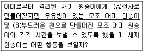
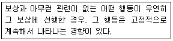
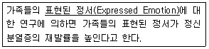
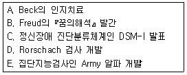
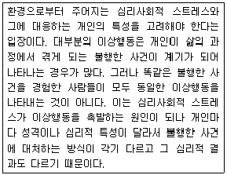
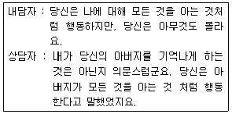
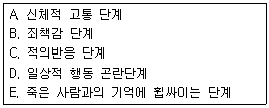

임상심리사-2급 (2012-05-20 기출문제)
1과목: 심리학개론
1. ‘대학생들은 축구와 야구 중에 어느 것을 더 좋아하는가' 라는 문제를 검증하는 경우처럼 빈도나 비율의 차이 검증에 가장 적합한 분석방법은?
- t 검증
- F 검증
- Z 검증
- X2검증
(정답률: 83%)

2. 다음 중 부적강화에 관한 설명으로 가장 적합한 것은?
- 반응행동이 다시 일어날 확률을 증가시킨다.
- 고전적 조건형성에서 꼭 필요한 것이다.
- 처벌의 한 예이다.
- 지렛대를 누르면 전기충격이 가해진다.
(정답률: 74%)
3. 다음 중 극단값의 영향을 가장 많이 받는 것은?
- 최빈치
- 중앙치
- 백분위
- 산술평균
(정답률: 42%)
4. 심리검사가 측정하고자 하는 내용이나 속성을 실제 얼마나 잘 측정하는지를 나타내는 개념은 무엇인가?
- 표준화
- 난이도
- 타당도
- 신뢰도
(정답률: 91%)
5. 다음 실험을 실시한 심리학자와 실험 결과가 바르게 짝지어진 것은?

- Harlow : (A)보다 (B)와 더 많은 시간을 보낸다.
- Harlow : (B)보다 (A)와 더 많은 시간을 보낸다.
- Bowlby : (A)보다 (B)와 더 많은 시간을 보낸다.
- Bowlby : (B)보다 (A)와 더 많은 시간을 보낸다.
(정답률: 73%)
6. 살인사건이나 화재 등으로 죽는 사람과 심장마비로 죽는 사람 중 누가 더 많은지를 묻는 질문에서 사람들이 흔히 범하는 확률추론과정의 오류는?
- 가용성 발견법
- 대표성 발견법
- 확증편향
- 연역적추리
(정답률: 79%)
7. Freud는 거세불안을 극복하는 과정에서 어떤 성격의 요소가 형성된다고 보았는가?
- 이드
- 자아
- 초자아
- 무의식
(정답률: 70%)
8. 재혼에 방해가 되는 아들을 죽이고 싶은 욕망을 가진 어머니가 아들을 병적으로 끔찍하게 사랑하는 경우를 가장 잘 설명하는 방어기제는?
- 투사
- 반동형성
- 승화
- 합리화
(정답률: 96%)
9. 다음 중 내적 타당도를 위협하는 요소와 가장 거리가 먼 것은?
- 제3의 변수개입
- 시험 효과
- 측정 도구상의 문제
- 낮은 통계 검증력
(정답률: 60%)
10. 다음 중 인지부조화 이론의 예로 적합하지 않은 것은?
- 지루한 일을 하고 천원 받은 사람이 만원 받은 사람보다 그 일이 더 재미있다고 생각한다.
- 열렬히 사랑한 애인과 헤어진 남자가 그 애인이 못생기고 성격도 나쁘다고 생각한다.
- 어떤 사람이 맛이 없는 빵을 10개나 먹고 난 후 자신이 배가 고팠었다고 생각한다.
- 반개인주의적 태도를 지닌 사람이 친개인주의적 발언을 한 후 친개인주의적으로 변한다.
(정답률: 72%)
11. 부분보고법과 전체보고법을 이용한 Sperling의 기억에 관한 실험은 무엇을 알아보기 위한 것인가?
- 감각기억의 크기
- 단기기억의 한계
- 단기기억의 소멸
- 장기기억의 생성
(정답률: 63%)
12. 다음 중 설단현상(Tip-of-the-tongue Phenomenon)과 가장 관련이 있는 것은?
- 청킹(군집화)
- 인출
- 약호화(부호화)
- 유지
(정답률: 73%)
13. Rogers의 성격 이론에 관한 설명으로 틀린 것은?
- 경험의 객관적인 측면을 강조한다.
- 무조건적 긍정적 존중을 강조한다.
- 자신의 경험을 있는 그대로 받아들일 수 있는 사람이 적응적이다.
- 사람들은 자기와 경험 사이에 일관성을 유지하려고 한다.
(정답률: 73%)
14. 사회학습이론에 입각한 성격에 관한 설명으로 옳은 것은?
- 사회학습이론에서는 성격이 인지과정이나 동기에 의한 영향을 인정하지 않는다.
- 사회학습이론에서는 관찰학습과 모델링을 통해서 보상받은 행동을 대리적으로 학습한다고 한다.
- 사회학습이론에서는 행동에 대한 환경적 변인의 독립적인 영향을 강조한다.
- Bandura는 개인이 자신의 노력으로 원하는 결과를 얻을 수 있다는 신념이나 기대를 자기존중감(Self-esteem)이라고 하였다.
(정답률: 85%)
15. Kohlberg의 도덕성 발달이론에 관한 설명으로 옳은 것은?
- 자신의 양심을 판단기준으로 삼는 것은 인습적 수준이다.
- 나쁜 일을 해도 신체적 처벌을 받지 않으면 괜찮다고 생각하는 것은 인습적 수준이다.
- 타인의 인정을 받기 위하여 규칙이나 도덕을 지키는 것은 인습이후 수준이다.
- 도덕발달의 세 가지 수준을 누구나 어느 정도는 다 소유하고 있다.
(정답률: 60%)
16. 인간의 성격과 관련된 관점들 중 결정론적인 관점들로만 짝지어진 것은?
- 정신분석학 - 조작적 조건형성
- 인본주의적 관점 - 특성이론
- 관찰학습 - 실존주의적 관점
- 현상학적 관점 - 사회학습이론
(정답률: 53%)
17. 형태재인이 이루어지기 위해서는 반드시 입력되는 자극정보와 정확하게 일치하는 기억정보가 장기기억 속에 존재해야 한다고 가정하는 이론은?
- 판형이론
- 원형대조이론
- 특징분석이론
- 심상대조이론
(정답률: 46%)
18. 다음은 무엇에 관한 설명인가?

- 자극 일반화
- 도피행동
- 미신행동
- Scallop 현상
(정답률: 82%)
19. 고전적 조건형성의 확립에는 조건자극과 무조건 자극의 시간적 관계가 중요한데, 다음 중 가장 효과적인 조건은?
- 동시조건형성
- 흔적조건형성
- 지연조건형성
- 역행조건형성
(정답률: 54%)
20. 다음 중 척도와 그 예가 틀리게 짝지어진 것은?
- 명명척도(Nominal Scale) - 운동선수 등번호
- 서열척도(Ordinal Scale) - 성적에서의 학급석차
- 등간척도(Interval Scale) - 온도계로 측정한 온도
- 비율척도(Ratio Scale) - 지능검사로 측정한 지능지수
(정답률: 84%)
2과목: 이상심리학
21. 반항성 장애의 병인론에 관한 설명으로 틀린 것은?
- 최근에는 XYY증후군과 행동 문제 간의 원인에 대해서 지지연구가 부족한 편이다.
- 테스토스테론과 같은 호르몬과 관련 있다는 설명이 있다.
- 정신분석학적으로는 초자아의 결함으로 이 장애를 설명한다.
- 정상 아동에 비해서 반항성 장애 아동들은 더 높은 각성 수준을 지니고 있다.
(정답률: 43%)
22. 기분장애에 관한 설명으로 틀린 것은?
- 주요 우울과 양극성 장애는 모두 일화적 기분장애이다.
- 기분부전장애는 우울한 증상이 특징이며 양극성 장애보다 더 극단적인 기분 변동을 일으킨다.
- 기분부전장애와 순환성 기분장애는 모두 만성적 기분장애이다.
- 주요 우울은 낮은 기분, 부정적 인지, 수면과 식욕 방해의 특징을 보인다.
(정답률: 58%)
23. 다음 중 우울증을 설명한 학자와 그 이론의 내용이 틀린 것은?
- Bowlby - 유아기나 아동기 때 모자간의 초기 애착관계에서의 문제로 설명하고자 하였다.
- Beck - 우울한 사람들은 자기, 타인 및 세상에 대해서 부정적인 생각을 가지고 있다고 제안했다.
- Kohut - 우울증은 구강기와 항문기의 가학적 성향에서 나온다고 보았다.
- Freud - 상실 후에 생기는 죄책감, 분노 및 무력감 등이 자신에게로 향하게 된 것을 원인으로 보았다.
(정답률: 69%)
24. 다음 밑줄 친 '표현된 정서'의 의미로 옳은 것은?

- 지나치게 정서적 지지와 격려를 제공하는 것
- 비판적이고 과도한 간섭을 하는 것
- 냉정하고 조용하며, 무관심한 것
- 관여하지 않으며, 적절한 한계를 정해주지 못하는 것
(정답률: 76%)
25. 다음 중 자폐성 장애에 관한 설명으로 옳은 것은?
- 남성보다 여성에서 4~5배 더 많이 발병한다.
- 유병률은 인구 천 명당 2~5명으로 보고되고 있다.
- 사회적 상호작용을 위해 여러 가지 비언어적 행동을 사용한다.
- 언어기술과 전반적 지적 수준이 예후와 가장 밀접한 관계가 있다.
(정답률: 67%)
26. 여러 가지 운동 틱과 1가지 또는 그 이상의 음성 틱이 1년 이상의 기간 동안 반복적으로 나타나는 장애는?
- 레트 장애
- 뚜렛 장애
- 운동기술 장애
- 아스퍼거 장애
(정답률: 88%)
27. 다음 중 만성적인 알코올 중독자에게서 흔히 발생하는 것으로 비타민B1(티아민) 결핍과 관련이 깊으며 지남력장애, 최근 및 과거 기억력의 상실, 작화증 등의 증상을 보이는 장애는?
- 혈관성 치매
- 코르사코프 증후군
- 진전 섬망
- 다운증후군
(정답률: 74%)
28. 다음 중 기질성 정신장애에 해당되는 것은?
- 양극성 장애
- 정신분열병
- 분열성 성격장애
- 치매
(정답률: 53%)
29. Jellinek이 제시한 알코올 중독이 되는 4단계에 관한 설명으로 틀린 것은?
- 전 알코올 증상단계(Prealcoholic Phase)에서는 반복적으로 술을 마심으로써 긴장이 해소된다.
- 전조단계(Prodromal Phase)에서는 음주에 대해 죄의식을 갖지만 음주동안 일어난 일에 대해서는 기억한다.
- 결정적단계(Crucial Phase)에서는 음주에 대한 통제력이 상실되어 가족과의 문제를 일으킨다.
- 만성단계(Chronic Phase)에서는 알코올에 대해 내성과 금단반응이 나타난다.
(정답률: 75%)
30. 병적 도벽에 관한 설명으로 틀린 것은?
- 개인적으로 쓸모가 없거나 금전적으로 가치가 없는 물건을 훔치려는 충동을 저지하는 데 반복적으로 실패한다.
- 훔치기 전에 고조되는 긴장감을 경험한다.
- 훔친 후에 기쁨, 충족감, 안도감을 느낀다.
- 분노나 복수를 하기 위해서 훔친다.
(정답률: 77%)
31. 다음 중 공황장애를 가진 내담자를 심리치료 하는 데 가장 효과적인 방법은?
- 행동조형
- 자유연상법
- 점진적 노출법
- 혐오조건화
(정답률: 83%)
32. 이상심리학의 발전에 기여한 중요한 사건들을 연대순으로 바르게 나열한 것은?

- A → B → C → D → E
- B → E → D → C → A
- B → D → E → A → C
- B → E → D → A → C
(정답률: 46%)
33. 다음 정신분열병 증상들 중 성질이 다른 하나는?
- 정서의 메마름
- 언어의빈곤
- 의기결여
- 환각
(정답률: 77%)
34. 다음 중 경계선 성격장애의 임상적 특징이 아닌 것은?
- 반복적인 자살행동과 만성적인 공허감
- 자신의 중요성에 대한 과장된 지각과 특권의식 요구
- 실제적 또는 가상적 유기를 피하기 위한 필사적인 노력
- 타인에 대해 극단적인 이상화와 평가절하를 번갈아 하는 불안정하고 강력한 대인관계 방식
(정답률: 61%)
35. 이상심리학의 역사에 관한 설명으로 틀린 것은?
- Kraepelin은 현대 정신의학의 분류체계에 공헌한 바가 크다.
- 고대 원시사회에서는 정신병을 초자연적 현상으로 이해하였다.
- Hippocrates는 모든 질병은 그 원인이 마음에 있다고 하였다.
- 서양 중세에는 과학적 접근 대신 귀신론적 입장이 성행하였다.
(정답률: 70%)
36. Beck의 우울 이론 중 부정적 요소를 나타내는 3가지 도식에 해당하지 않는 것은?
- 과거에 대한 부정적인 도식
- 자신에 대한 부정적인 도식
- 미래에 대한 부정적인 도식
- 주변 환경에 대한 부정적인 도식
(정답률: 88%)
37. 정신분열증의 하위유형에 관한 설명으로 틀린 것은?
- 혼란형 정신분열증 환자는 신조어를 만들거나 바보 같은 표정으로 웃음을 터뜨린다.
- 망상형 정신분열증 환자는 흥분되어 있으며 분노에 차 있고 간혹 폭력적이 된다.
- 혼란형 정신분열증 환자는 극단적인 형태의 운동정지로 운동이 수동적이 되며 반복적인 언행을 보이기도 한다.
- 망상형 정신분열증 환자는 자신의 능력을 과대평가하기도 하고 남을 의심하고 모든 일에 자신을 연관시켜 생각하기도 한다.
(정답률: 50%)
38. 성 장애 및 성정체감 장애에 관한 설명으로 틀린 것은?
- 성도착과 관련된 장애는 남성이 대부분이다.
- 동성애(Homosexuality)를 하위 진단으로 포함한다.
- 의상도착증(Transvestism)은 성적인 자극물로 옷을 사용하는 경우이다.
- 자신의 해부학적인 성을 변화시키고 싶어 하는 증상은 성정체감 장애(Gender Identity Disorder)와 관련된다.
(정답률: 84%)
39. 이상행동을 설명하는 이론적 관점 중 다음의 특징을 설명하는 것은?

- 취약성-스트레스모델
- 심리사회적 모델
- 사회적 학습이론
- 인지 이론
(정답률: 76%)
40. 주의력 결핍-과잉행동장애(ADHD)의 특징적 증상과 거리가 먼 것은?
- 주의가 쉽게 산만해진다.
- 자극에 대한 흥미와 관심이 부족하다.
- 다른 사람의 활동을 방해하고 간섭한다.
- 남의 말을 경청하지 않는 것처럼 보인다.
(정답률: 78%)
3과목: 심리검사
41. 기억장애를 보이고 있는 환자에게 기억 및 학습능력을 평가하는데 가장 적합한 것은?
- Trail Making Test
- SCL-90-R
- Face-Hand Test
- WMS-R(또는 WMS-Ⅲ)
(정답률: 60%)
42. 다음 중 지능검사에 관한 설명으로 옳은 것은?
- 현재 널리 사용되는 지능검사들은 대부분 문화적 영향이 적절히 배제되어 있다.
- 정신검사(Mental Test)란 용어를 심리학에 도입한 학자는 Binet이다.
- 지능검사는 피검사자의 성격특성이나 정신병리를 파악하는 데도 사용한다.
- 최초의 편차지능을 이용한 지능검사는 Spearman이 만들었다.
(정답률: 66%)
43. 다음 중 개인용 지능검사를 통해 수집할 수 있는 정보와 가장 거리가 먼 것은?
- 전반적 지적능력
- 소근육 운동능력
- 창의적 예술능력
- 학습된 교육수준
(정답률: 79%)
44. 신경심리평가시 고려해야 할 사항과 가장 거리가 먼 것은?
- 손상 후 경과시간
- 교육수준
- 연령
- 성별
(정답률: 69%)
45. 주제통각검사(TAT ; Thematic Apperception Test)의 실시에 관한 설명으로 옳은 것은?
- 수검자가 “이 사람은 남자인가요? 여자인가요?” 라고 묻는 경우, 검사요강을 참고하여 성별을 알려준다.
- 자연스러운 반응을 위해 수검자의 반응이 지나치게 피상적이고 기술적인 경우 예를 들어 소년이 바이올린 앞에 있다)라도 검사자가 개입해서는 안 되며, 다음 반응으로 넘어가야 한다.
- 카드를 보여주고, 각 그림을 보면서 될 수 있는 대로 연극적인 장면을 만들어 보라고 지시한다.
- 모든 수검자에게 24장의 카드를 전부 실시한다.
(정답률: 73%)
46. 베일리 척도에 관한 설명으로 틀린 것은?
- 정상 발달로부터의 이탈 여부 및 정도를 파악하기 위해서 고안되었다.
- 영아의 능력은 분명히 구별되는 여러 가지 요인으로 구성되어 있다는 가정에 근거한다.
- 개정된 베일리 척도는 1개월에서 42개월까지의 영아를 대상으로 사용할 수 있다.
- 발달지수는 평균이 100, 표준편차가 16인 일종의 정상화된 표준점수이다.
(정답률: 34%)
47. 타당도의 종류에 관한 설명으로 옳은 것은?
- 구인타당도- 검사가 측정하고자 하는 이론적 개념을 검사에서 측정하고 있는 정도이다
- 공인타당도- 검사점수와 예측 행동자료가 일정한 시간을 두고 수집된다.
- 예언타당도- 관심 있는 동일 특성을 측정하는 검사 외의 다른 대안적 방법에서 측정된 내용과의 관계를 보는 것이다.
- 내용타당도- 특정한 도구의 정확성에 대한 평정이다.
(정답률: 51%)
48. Stanford-Binet 지능검사에 관한 설명으로 틀린 것은?
- 정신연령과 실제(생활)연령 간의 비율을 토대로 지능수준을 계산하였다.
- 추후 평균이 100이고 표준편차가 16인 표준점수로 개정하였다.
- 언어성과 동작성 검사로 구성되어 있다.
- 초기검사는 20세 이상에게는 적용하기 어려웠다.
(정답률: 50%)
49. 다음 중 다면적 인성검사(MMPI)의 해석방식 중 '내용에 근거한 해석'에 관한 설명으로 틀린것은?
- Harris-Lingos의 하위척도 등이 포함된다.
- 문항에 대한 요인분석을 통해 개발된 척도들이 포함된다.
- 내용타당도에 근거하기 때문에 경험적 타당도는 요구되지 않는다.
- 문항들에 대한 내용분석에 근거하여 이론적 척도를 구성할 수 있다.
(정답률: 79%)
50. Wechsler 지능검사 결과 동작성 지능이 언어성 지능보다 현저하게 높을 때 나타날 가능성이 가장 낮은 장애는?
- 학습장애
- 반사회적성격장애
- 정신지체
- 주요우울증
(정답률: 55%)
51. 다음 중 발달검사를 사용할 때 고려해야 할 사항과 가장 거리가 먼 것은?
- 일반적인 기능적 분석에 유용해야 한다.
- 규준에 의한 발달적 비교가 가능해야 한다.
- 다중기법적 접근을 취해야 한다.
- 경험적으로 타당한 측정도구를 사용해야 한다.
(정답률: 55%)
52. 다음 중 신경심리검사에 관한 설명으로 틀린 것은?
- 가벼운 초기 뇌손상의 진단에는 효과적이지 못하다.
- 치료 효과 및 회복과정을 진단해 줄 수 있다.
- 우울장애와 치매상태를 감별해줄 수 있다.
- 특정 인지기능 평가를 위한 단일 신경심리검사가 선호되는 추세이다.
(정답률: 50%)
53. Guilford의 지능구조 입체모형 중 조작(Operation)의 요인에 해당하는 것은?
- 의미 있는 단어나 개념의 의미적 정보
- 사고결과의 적절성을 판단하는 평가
- 어떤 정보에서 생기는 예상이나 기대들의 합
- 표정, 동작들의 행동적 정보
(정답률: 50%)
54. 다음 신경심리검사의 측정영역을 비교할 때 측정영역이 나머지와 다른 검사는?
- 지남력 검사
- 숫자 외우기 검사(Digit Span)
- 보스톤 이름대기 검사(Boston Naming Test)
- 요일순서 거꾸로 말하기
(정답률: 54%)
55. 다음 중 다면적 인성검사(MMPI)의 특수척도 중 자아강도 척도(Ego Strength Scale)에 관한 설명으로 틀린 것은?
- 정신치료의 성공여부를 예측하기 위해 고안되었다.
- 개인의 전반적인 기능수준과 상관이 있다.
- 효율적인 기능과 스트레스를 견디는 능력을 반영한다.
- F척도가 높을수록 이 척도의 점수는 높아진다.
(정답률: 81%)
56. 검사해석시 자주 사용하는 T점수는 Z점수와 밀접한 관련이 있다. T점수가 60이라면 이에 해당하는 Z점수는?
- 0
- 1
- 2
- -1
(정답률: 70%)
57. 심리평가를 위한 면담에 관한 설명으로 틀린 것은?
- 피검자뿐 아니라 필요하다면 보호자와 같은 주변 사람으로부터 정보를 얻을 수 있다.
- 라포를 유지한 상태에서 피검자의 자발성을 최대한 이끌어내는 것이 필요하다.
- 피검자의 진술에서 객관적 현실에 부합되지 않는 경우는 직면이 필요하다.
- 폐쇄형 질문보다는 개방형 질문을 우선적으로 사용한다.
(정답률: 79%)
58. 비구조화된 면담과 비교하여 구조화된 면담에 대한 설명으로 틀린 것은?
- 면담자 간의 일치도를 높일 수 있다.
- 상대적으로 신뢰도가 더 높다.
- 유연성 있게 진행되는 것은 상대적으로 어렵다.
- 객관적으로 수량화하는 것은 상대적으로 어렵다.
(정답률: 71%)
59. MMPI 타당도 척도에서 F척도는 상승해 있고 L척도는 보통 수준이며 K척도가 낮은 경우의 피검자 특성과 가장 거리가 먼 것은?
- 피검자는 솔직하고 자기 비판적이다.
- 심리적으로 단순하여 상황에 지나치게 감정적으로 대응하는 편이다.
- 다소 도덕적으로 엄격하고 심리적으로 융통성이 없다.
- 혼자 있기를 좋아하는 편으로 많은 심리적 문제를 인정하고 있다.
(정답률: 34%)
60. 다면적 인성검사(MMPI)의 임상척도 중 0(Si)척도가 상승한 경우 함께 상승할 가능성이 높은 척도들로 짝지어진 것은?
- 2(D), 7(Pt)
- 9(Ma), 4(Pd)
- 1(Hs), 3(Hy)
- 6(Pa), 8(Sc)
(정답률: 62%)
4과목: 임상심리학
61. MMPI에서 각 임상척도의 평균과 표준편차로 옳은 것은?
- 평균 50, 표준편차 15
- 평균 50, 표준편차 10
- 평균 100, 표준편차 15
- 평균 100, 표준편차 10
(정답률: 53%)
62. 최초의 심리진료소를 설립함으로써 임상심리학의 초기발전에 직접적으로 중요한 공헌을 한 인물은?
- Kant
- Witmer
- Mowrer
- Miller
(정답률: 88%)
63. 다음 중 뇌 기능의 국재화에 관한 설명으로 틀린 것은?
- 측두엽은 청각, 청각적인 언어의 이해와 관련이 있다.
- 후두엽은 후각과 연관이 있다.
- 두정엽은 시각적 처리와 체감각 정보에 관련이 있다.
- 전두엽은 정서적 상태의 생성, 운동기능에 관련이 있다.
(정답률: 78%)
64. 다음 중 인간중심치료에 대한 설명으로 적합하지 않은 것은?
- 인간중심 접근은 개인의 독립과 통합을 목표로 삼는다.
- 인간중심적 상담(치료)은 치료과정과 결과에 대한 연구관심사를 포괄하면서 개발되었다.
- 치료자는 주로 내담자의 자기와 세계에 대한 인식에 주로 관심을 가진다.
- 내담자가 정상인인가, 신경증 환자인가, 정신병 환자인가에 따라 각기 다른 치료 원리가 적용된다.
(정답률: 76%)
65. 다음 중 접수면접에서 반드시 확인되어야 할 사항과 가장 거리가 먼 것은?
- 인적 사항
- 주 호소 문제
- 내원하게 된 직접적 계기
- 문제의 원인으로 추정되는 어린 시절의 경험
(정답률: 91%)
66. MMPI 임상척도의 제작방식은?
- 내적 구조 접근 및 요인분석
- 내적 준거 방식
- 외적 준거 방식
- 직관적 방식
(정답률: 72%)
67. 행동평가에 관한 설명으로 틀린 것은?
- 목표행동을 정확히 기술한다.
- 행동의 선행조건과 결과를 확인한다.
- 법칙정립적(Nomothetic) 접근에 기초한다.
- 특정상황에 대한 개인의 행동에 초점을 맞춘다.
(정답률: 74%)
68. 다음 중 심리치료를 통해 가장 양호한 성과를 거둘 것으로 예상되는 환자는?
- 최근의 스트레스와 관련하여 급성적인 증상을 보이는 환자
- 지능이 평균 이하이고 언어적 능력이 낮은 환자
- 정신병이 있는 환자
- 오래 지속된 성격장애 환자
(정답률: 87%)
69. 암, 당뇨 등을 가진 환자들을 위한 효과적인 집단개입의 형태는?
- 인지행동적 집단치료
- 가족치료
- 인본주의적 집단치료
- 심리교육적 집단치료
(정답률: 88%)
70. 지역사회 심리학 활동에 관한 설명으로 틀린 것은?
- 정신건강예방사업을 위해 비전문가들을 훈련시켜 활용할 수 있다.
- 학교 및 직장, 조직체 등을 대상으로 방문사업을 실시하는 것이 권장된다.
- 1차 및 2차, 3차 예방수준에서 고위험군 대상의 집중적인 개입을 권장한다.
- 위기개입의 경우에 준전문가 및 예방적 개입의 활용이 강조된다.
(정답률: 61%)
71. 임상심리학의 발전에 영향을 준 인물과 사건에 관한 연결이 올바른 것은?
- Kraepelin - 정신병리의 유형에 관한 분류
- Terman - TAT와 같은 투사법 심리검사의 개발
- Levy - 제1차 세계대전 당시 사용되었던 집단성격검사인 Army 알파 개발
- Wilhelm Wundt - 의식에 관한 연구를 무의식의 영역까지 확대하여 연구함
(정답률: 55%)
72. 위치감각과 공간적 회전 등의 개별적인 신체 표상과 관련이 있는 대뇌 영역은?
- 전두엽
- 측두엽
- 후두엽
- 두정엽
(정답률: 68%)
73. Joseph Wolpe의 상호교호적 억제(Reciprocal Inhibition)에 관한 설명으로 가장 적합한 것은?
- 불안유발자극과 이완유발자극을 조합하여 조작적 조건형성의 부적 강화를 강화시키는 절차이다.
- 불안과 양립할 수 없는 반응을 유발시킴으로써 자극과 불안 간의 결합을 약화시키는 절차이다.
- 자극과 반응 간의 상호 처벌적인 방식으로 연합시켜 특정 불안반응이나 회피행동을 탈조건형성 시키는 절차이다.
- 상호억제를 유발하는 경쟁자극으로서 전기충격과 같은 혐오자극을 제시하여 불안행동을 억제시키는 절차이다.
(정답률: 59%)
74. 심리평가 결과에 관한 설명으로 옳은 것은?
- 검사결과의 유용성은 평가대상(Target)의 기저율(Base Rate)과는 무관하게 결정된다.
- 정신분열증 유무검사의 경우 일반전집에서 오경보(False Positive)의 가능성이 거의 없다.
- 전문가에 의한 임상적 판단은 대개 통계적 판단보다 일관되게 우월하게 나타난다.
- 범주적 진단분류와 차원적 진단분류 중 어느 하나만을 선택할 필요는 없다.
(정답률: 71%)
75. 인지행동적 상담에서 우울증은 주요 3가지(Triad)에 대한 부정적 관점을 가지기 때문에 발생한다고 보았다. 3가지 부정적 관점과 가장 거리가 먼 것은?
- 자 기
- 환경 또는 세상
- 과 거
- 미 래
(정답률: 81%)
76. 정신병리가 의심될 때 주로 사용하는 구조화된 정신의학적 면접법은?
- 정신역동적 면담
- 개인력 청취
- 가계력 조사
- 정신상태평가
(정답률: 84%)
77. 체계적 둔감법에 관한 설명으로 틀린 것은?
- 기본 절차는 조작적 조건형성의 원리에 기초한 치료기법이다.
- 주로 불안과 관련된 부적응 행동의 치료에 사용된다.
- 불안을 일으키는 자극들을 반복적으로 이완상태와 짝지운다.
- 신경성 식욕부진증, 충동적 행동, 우울증을 치료하는 데도 사용된다.
(정답률: 55%)
78. 임상심리학자의 법적·윤리적 책임에 관한 설명으로 틀린 것은?
- 임상심리학자의 직업수행에는 공적인 책임이 따른다.
- 어떠한 경우에도 내담자의 비밀은 보장해야 한다.
- 내담자 사생활의 부당한 침해를 방지하기 위해 노력해야 한다.
- 내담자, 피감독자, 학생, 연구참여자들을 성적으로 악용해서는 안 된다.
(정답률: 86%)
79. 환자에게 자신의 메시지를 정교화 하도록 도울 뿐만 아니라 면접자가 그 메시지를 이해하고 있다는 것을 확실히 하기 위하여 사용되는 의사소통기법은?
- 요 약
- 명료화
- 직 면
- 부연설명
(정답률: 79%)
80. 학교심리학자(School Psychologist)의 역할과 가장 거리가 먼 것은?
- 학생을 상대로 상담활동을 한다.
- 교사를 대상으로 자문역할을 한다.
- 읽기/쓰기 장애의 진단 및 치료를 한다.
- 효과적인 교수방법을 개발한다.
(정답률: 61%)
5과목: 심리상담
81. 다음 중 게슈탈트 심리치료에서 강조하는 것이 아닌 것은?
- 지금-여기
- 내담자의 억압된 감정에 대한 해석
- 미해결 과제 또는 회피
- 환경과의 접촉
(정답률: 67%)
82. 다음 중 가족치료의 이론적 근거에 해당되는 것은?
- 순환의 사고
- 합산의 원칙
- 개인주의
- 선형의 사고
(정답률: 49%)
83. 집단상담에서 집단응집력에 관한 설명으로 틀린 것은?
- 응집력이 높은 집단은 자기개방을 많이 한다.
- 응집력은 집단상담의 성공에 매우 중요한 요소가 된다.
- 응집력이 낮은 집단은 지금-여기에서의 사건이나 일에 초점을 맞춘다.
- 응집력이 높은 집단은 집단의 규범이나 규칙을 지키지 않는 다른 집단성원을 제지한다.
(정답률: 67%)
84. 다음은 심리치료에서 어떤 상담기술을 사용한 것인가?

- 재진술
- 직면(도전)
- 해 석
- 감정반영
(정답률: 57%)
85. 다음 중 알코올 중독 치료에 관한 설명으로 옳은 것은?
- 알코올 중독 치료에는 집단상담이나 자조집단보다는 개인상담이 더 많이 활용된다.
- 정신역동적 관점에서는 의존욕구와 관련된 갈등이 알코올 중독을 일으키는 중요한 요인이라고 간주한다.
- 알코올 남용은 알코올 의존과 달리 알코올에 대해 생리적으로 의존하고 있는 경우로 내성이나 금단증상이 있다.
- 알코올 중독에 대한 심리치료에서 치료 초기에 무의식적 사고와 감정에 대한 해석을 자주 사용한다.
(정답률: 75%)
86. 가족구성원을 상실한 가족에게서 나타나는 비애반응의 단계를 바르게 나열한 것은?

- A → E → B → C → D
- A → B → C → D → E
- E → A → C → B → D
- E → B → A → C → D
(정답률: 59%)
87. 현실치료에서 Glasser가 제시한 8가지 원리에 해당되지 않는 것은?
- 감정보다 행동에 중점을 둔다.
- 현재보다 미래에 초점을 맞춘다.
- 계획을 세워 계획에 따라 반드시 실천하겠다는 약속을 다짐 받는다.
- 변명은 금물이다.
(정답률: 73%)
88. 인간중심치료 이론에서 치료자의 태도에 해당하는 것은?
- 저항의 분석
- 체험에의 개방
- 솔직성
- 무조건적 반영
(정답률: 71%)
89. Beck의 인지치료에서 치료 초기에 감찰(Monitoring)과 수정의 주요 표적이 되는 사고로서 구체적인 상황에서 아주 빠르게 스치듯이 떠오르는 생각이나 영상을 찾아내는 방법이 아닌 것은?
- 사고기록지 작성하기
- 감정변화 즉시 질문하기
- 생활사건을 생생하게 떠올리기
- 조건문 형태의 문장으로 생각을 표현하기
(정답률: 54%)
90. 벌을 통한 행동수정시 유의사항이 아닌 것은?
- 벌 받을 행동을 구체적으로 세분화하고 설명한다.
- 벌을 받을 상황을 가능한 한 없애도록 노력한다.
- 벌은 그 강도를 점차로 높여가야 한다.
- 벌 받을 행동이 일어난 직후에 즉각적으로 벌을 준다.
(정답률: 85%)
91. 진로의사결정 모델에 관한 설명으로 옳은 것은?
- 기대모델은 대안들을 하나씩 순차적으로 줄여가는 진로의사결정 모델이다.
- 배제모델은 진로선택시 유인가와 기대의 상호작용에 의해 진로를 결정한다.
- 갈등모델은 의사결정의 스트레스가 의사결정을 촉진한다고 가정한다.
- 효용모델은 의사결정 과정에서 항상 갈등이 발생한다고 가정한다.
(정답률: 67%)
92. 병적 도박에 관한 설명으로 틀린 것은?
- 대개 돈의 액수가 커질수록 더 흥분감을 느끼며, 흥분감을 느끼기 위해 액수를 더 늘린다.
- 도박행동을 그만두거나 줄이려고 시도할 때 안절부절 못하거나 신경이 과민해진다.
- 병적 도박은 DSM-Ⅳ에서 반사회성 성격장애로 분류된다.
- 병적 도박은 전형적으로 남자는 초기 청소년기에 여자는 인생의 후기에 시작되는 경우가 많다.
(정답률: 82%)
93. 부부치료의 접근법에 관한 설명으로 옳은 것은?
- 행동심리학적 치료에서는 부부간에 교환하는 정적 자극과 부적 자극을 중요시 여긴다.
- 의사소통기술의 연습은 인지적 부부치료에서 사용하는 기법이다.
- 구조적 부부치료는 커뮤니케이션 이론에 근거한다.
- 전략적 부부치료는 세대 간의 경계를 중요시 여긴다.
(정답률: 59%)
94. 다음 중 Axline의 비지시적 놀이치료에서 놀이치료자가 갖추어야 할 원칙에 포함되지 않는 것은?
- 치료자는 아동을 있는 그대로 수용한다.
- 치료자는 아동과 따뜻하고 친근한 관계를 가능한 한 빨리 형성하도록 한다.
- 치료자는 가능한 비언어적인 방법으로만 아동의 행동을 지시한다.
- 치료자는 아동이 타인과의 관계형성이 본인의 책임이라는 것을 알도록 하기 위해서는 제한을 둘 수 있다.
(정답률: 70%)
95. 다음 중 만성정신과 환자를 위한 정신재활치료에서 사례관리의 목적은?
- 환자가 독립적인 사회생활을 할 수 있는 다양한 주거 공간 확보
- 환자에게 필요한 다양한 서비스를 조정·통합
- 위기상황에서 환자의 증상과 사회적응을 급속히 안정
- 정신과 환자의 효율적인 대인관계 증진
(정답률: 67%)
96. 성피해 아동의 심리치료에 관한 설명으로 틀린 것은?
- 피해 아동의 연령에 따라 적절한 심리치료를 실시한다.
- 피해 아동의 심리적 상처를 자극하지 않기 위해서 퇴행행동을 모두 받아준다.
- 치료의 초기에는 아동과 어머니(보호자)가 같이 치료를 시작한다.
- 치료의 보조기구(도구)로 신체인형을 사용한다.
(정답률: 70%)
97. 합리적-정서적 치료 상담의 ABCDE 과정 중 D가 의미하는 것은?
- 논 박
- 결 과
- 신념체제
- 효 과
(정답률: 83%)
98. 진로상담의 목표와 가장 거리가 먼 것은?
- 진로상담은 내담자가 이미 결정한 직업적인 선택과 계획을 확인하는 과정이다.
- 진로상담은 개인의 직업적 목표를 명백히 해주는 과정이다.
- 진로상담은 내담자로 하여금 자아와 직업세계에 대한 구체적인 이해와 새로운 사실을 발견하도록 해준다.
- 진로상담은 직업선택과 직업생활에서 순응적인 태도를 함양하는 과정이다.
(정답률: 70%)
99. 다음 중 가족상담에 관한 설명으로 틀린 것은?
- 가족구성원 중 8세에서 13세의 아동은 참석시키지 않는다.
- 가족이 상담에 대한 동기를 상실했을 때 종결을 결정하는 것이 바람직하다.
- 상담자는 부모에게 올바른 역할에 대한 정보를 제공할 수 있다.
- 가족구성원 중에서 한 명과 개인상담을 실시할 수 있다.
(정답률: 75%)
100. 내담자들이 보이는 행동이나 사고를 체계적으로 측정하는 방법으로, 개인의 자연환경에서 행동을 평가하기 위해 내담자로 하여금 스스로 자신의 행동을 관찰하고 주간행동 기록표, 일일활동 일지, 자동적 사고 기록지 등을 작성하도록 하는 방법은?
- 임상적 면담법(Clinical Interview)
- 자기 보고형 검사(Self-report Test)
- 자기 감찰(Self-monitoring)
- 생리적 측정법(Physiological Measurement)
(정답률: 79%)